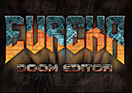

<!--PageLeftFmt-->
<td id='wikileft' valign='top'>

    <div id='wikilogo'>
    <a href='http://eureka-editor.sourceforge.net/'></a>
    </div>

    <div id='wikileft2'>
    <p class='sidehead'> Main Menu
</p>
<div class='vspace'></div><ul><li><a class='urllink' href='http://eureka-editor.sourceforge.net' rel='nofollow'>Home</a>
</li><li><a class='wikilink' href='Main_About.html'>About</a>
</li><li><a class='wikilink' href='Docs_Index.html'>Documentation</a>
</li><li><a class='wikilink' href='Site_Search.html'>Search.....</a>
</li></ul><p class='vspace sidehead'> SourceForge
</p>
<div class='vspace'></div><ul><li><a class='urllink' href='https://sourceforge.net/projects/eureka-editor' rel='nofollow'>Project</a>
</li><li><a class='urllink' href='https://sourceforge.net/projects/eureka-editor/files/Eureka/1.27' rel='nofollow'>Downloads</a>
</li><li><a class='urllink' href='https://sourceforge.net/p/eureka-editor/discussion/' rel='nofollow'>Forum</a>
</li><li><a class='urllink' href='https://sourceforge.net/p/eureka-editor/tickets/' rel='nofollow'>Bugs</a>
</li></ul><p class='vspace sidehead'> Links
</p>
<div class='vspace'></div><ul><li><a class='urllink' href='https://doomwiki.org' rel='nofollow'>DoomWiki</a>
</li><li><a class='urllink' href='https://www.doomworld.com' rel='nofollow'>DoomWorld</a>
</li><li><a class='urllink' href='https://freedoom.github.io' rel='nofollow'>FreeDoom</a>
</li><li><a class='wikilink' href='VisExp_Main.html'>Visplane Explorer</a>
</li><li><a class='urllink' href='https://gitlab.com/andwj/jeutool#readme' rel='nofollow'>JeuTool</a>
</li><li><a class='urllink' href='https://gitlab.com/andwj/ajbsp#readme' rel='nofollow'>AJBSP</a>
</li></ul><p class='vspace'>&nbsp;
</p>

    </div>
  </td>
<!--/PageLeftFmt-->